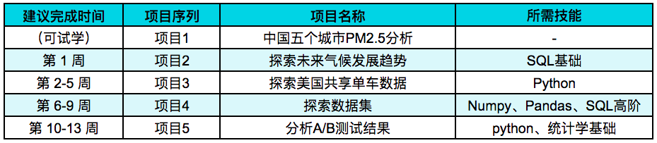

03. 有效期与建议学习节奏
"数据分析（入门）课程“ 计划 三个月 带你一站式入门 Python 和 SQL 两大最主流数据分析工具，掌握数据清洗、探索性分析、可视化等基础分析技能。
为了便于你制定自己的学习计划，我们将课程的时间线根据项目情况进行了梳理，你可以结合自己的工作/生活/学习习惯制定更加精确的学习规划。我们建议你 每周至少学习10小时 ，你可以根据自己的情况进行安排，譬如：周二、三、四各学习1.5小时，周末2天各学习3小时来达到最低学习时长的要求。
Como encontro tempo para meu Nanodegree

需要注意的是：
** 1. 项目1“中国五个城市PM2.5分析” 的学习安排：**
你在试学班中已经接触过这个项目，如果你已经通过，那么项目同步为通过状态，无需再次提交；如果你没有通过，我们强烈建议你先跳过，因为相关内容在“python入门”部分，我们的老师将更加细致地展开讲解，在你完成 “探索美国共享单车数据” 项目后，你会发现你可以很轻松地通过这个项目。
2. 学期结束时间 VS 建议完成时间：
你应该已经发现学期结束时间比建议完成时间更长， 多出的2周是为了帮助你更好地应对一些无法避免的突发状况 ，及时达成毕业，获得自己专属的毕业证书。尽管如此，我们仍然鼓励你按照建议完成时间，甚至早于建议完成时间毕业。